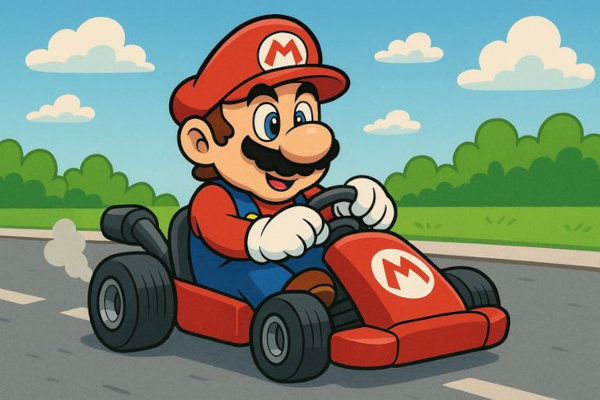

Mario é o principal personagem da Nintendo e um dos maiores ícones da história dos videogames. Criado por Shigeru Miyamoto em 1981, ele começou sua trajetória como um simples carpinteiro, mas posteriormente tornou-se um encanador italiano que vive no Reino dos Cogumelos.
Ao longo de suas aventuras, Mario enfrenta diversos desafios para proteger o reino e resgatar a Princesa Peach das garras do terrível Bowser, rei dos Koopas. Durante sua jornada, conta com a ajuda de seu irmão Luigi, de Toad e de vários outros aliados.
Mesmo sem possuir poderes permanentes, Mario utiliza diversos itens especiais que aumentam suas habilidades temporariamente, permitindo enfrentar inimigos muito mais fortes.
Graças ao seu carisma, simplicidade e enorme variedade de jogos, Mario tornou-se um dos personagens mais conhecidos da cultura pop e um verdadeiro símbolo da indústria dos videogames.
Mario possui excelente agilidade, conseguindo correr rapidamente, realizar mudanças bruscas de direção e atravessar fases cheias de obstáculos com grande facilidade.
Seu salto é sua principal habilidade. Mario consegue alcançar plataformas altas, derrotar inimigos pulando sobre eles e realizar movimentos acrobáticos durante suas aventuras.
Mesmo enfrentando diversos perigos, Mario demonstra enorme resistência física, continuando sua missão após longas jornadas e inúmeros desafios.
Mario utiliza diversos itens especiais, como o Super Cogumelo, a Flor de Fogo, a Folha Tanooki e a Estrela, que aumentam temporariamente suas capacidades.
Ele reage rapidamente a armadilhas, plataformas móveis e inimigos, permitindo completar fases extremamente difíceis.
Mesmo enfrentando dragões, fantasmas, monstros gigantes e castelos perigosos, Mario nunca abandona sua missão.
Mario sempre continua tentando até salvar seus amigos e proteger o Reino dos Cogumelos.
Durante várias aventuras, Mario trabalha ao lado de Luigi, Yoshi, Peach e outros personagens para enfrentar grandes ameaças.
Além de suas aventuras tradicionais, Mario demonstra habilidade pilotando karts, aviões, barcos e diversos veículos.
Mario consegue utilizar rapidamente qualquer novo equipamento ou habilidade oferecida pelos diferentes jogos da franquia.
Seu tradicional boné vermelho tornou-se uma das marcas registradas do personagem e o acompanha em praticamente todas as aventuras.
Seu uniforme oferece conforto e liberdade de movimento durante longas jornadas.
As luvas ajudam Mario em escaladas, combate e diversas atividades físicas.
Suas botas resistentes permitem longas caminhadas e grandes saltos.
Aumenta seu tamanho e resistência, permitindo suportar mais danos.
Concede a habilidade de lançar bolas de fogo contra os inimigos.
Fornece invencibilidade temporária e aumenta sua velocidade.
Permite que Mario voe por curtas distâncias e utilize sua cauda para atacar.
Outro equipamento especial que permite voar durante determinadas fases.
Nos jogos da série Mario Kart, Mario utiliza veículos extremamente rápidos para disputar corridas.
Apesar de ser conhecido como encanador, Mario foi criado originalmente como um carpinteiro no jogo Donkey Kong (1981).
A união entre sua coragem, agilidade, determinação e os diversos power-ups que utiliza durante suas aventuras faz de Mario um dos maiores heróis dos videogames. Sempre disposto a proteger o Reino dos Cogumelos e ajudar seus amigos, ele conquistou milhões de jogadores ao redor do mundo, tornando-se um dos personagens mais famosos e queridos da história dos games.